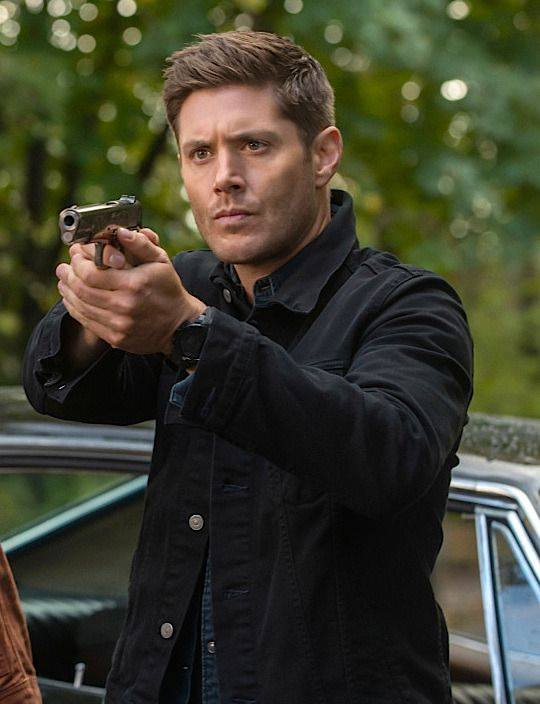

CV Dean
CV Dean
Sobre Mi
Soy un cazador experimentado en el mundo de lo sobrenatural, con un enfoque particular en enfrentar las amenazas más tenebrosas que acechan en la oscuridad.
Mi pasión por desentrañar misterios paranormales y proteger a la humanidad me ha llevado a recorrer caminos peligrosos, siempre acompañado de mi leal compañero, mi Chevy Impala. Fuera de las cacerías, puedo ser encontrado disfrutando de una buena hamburguesa y rock clásico.
Creo firmemente en mantener el sentido del humor incluso en las situaciones más escalofriantes. Mi lema: "¡Cazador de día, salvador del mundo sobrenatural de noche!"
Nota: Este curriculum vitae es ficticio y está basado en el personaje Dean Winchester de la serie de televisión "Supernatural". Los detalles son humorísticos